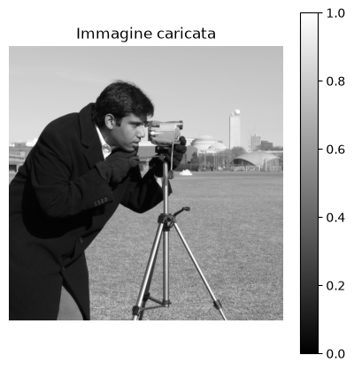
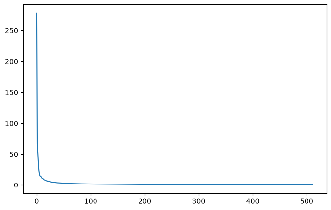
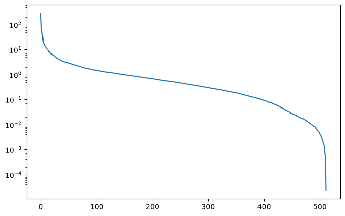
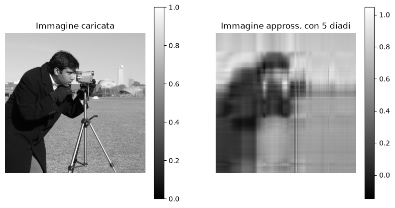
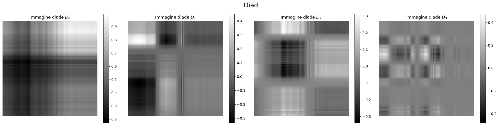
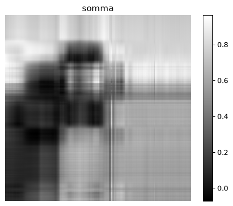

Esercizio 2) SVD per la compressione di immagini#
Consegna:#
Implementa il codice per caricare un’immagine in scala di grigi e calcolare la sua approssimazione mediante diadi.
Carica l’immagine
data.camera()diskimagee normalizzala con valori in [0, 1];Guarda l’immagine originale;
Grafica i valori signolari (usa sia
plt.plot()cheplt.semilogy());Approssima l’immagine usando \(k=5\) diadi;
Confronta l’approssimazione con l’immagine originale e calcola l’errore relativo di approssimazione (norma di Frobenius);
Guarda le prime 4 diadi.
Poi:
Cambiando \(k\), guarda e calcola come varia la compressione dell’immagine;
Ripeti l’esercizio con altre immagini (ad esempio
data.coffee()odata.coins()).
Caricamento dell’immagine#
Occorre installare il pacchetto scikit-image, che nel codice si importa come skimage.
Nel terminale, con l’ambiente Conda attivo: conda install scikit-image
import numpy as np
import matplotlib.pyplot as plt
from skimage import data
img = data.camera()
print(type(img))
print(img.shape)
print(f"Valori dell'immagine in [{np.max(img)}, {np.min(img)}]")
<class 'numpy.ndarray'>
(512, 512)
Valori dell'immagine in [255, 0]
if np.max(img) > 1:
img = img / np.max(img)
plt.figure(figsize=(5, 5))
plt.imshow(img, cmap='gray')
plt.title('Immagine caricata')
plt.colorbar()
plt.axis('off')
plt.show()

SVD dell’immagine#
U_img, s_img, VT_img = np.linalg.svd(img, full_matrices=False)
print(U_img.shape)
(512, 512)
# Visualizzo i valori singolari
plt.figure(figsize=(8, 5))
plt.plot(s_img)
#plt.ylim([0,1])
plt.show()

plt.figure(figsize=(8, 5))
plt.semilogy(s_img)
plt.show()

Approssimazione con diadi#
def approssimazione_svd(k):
img = (U_img[:, :k] * s_img[:k]) @ VT_img[:k, :]
return img
k= 5
img_approx = approssimazione_svd(k)
# Calcolo errore
erroreRel = np.linalg.norm(img-img_approx, 'fro') / np.linalg.norm(img, 'fro')
print(f"Errore Relativo con {k} diadi: {erroreRel:1.4f}")
# Visualizzo
plt.figure(figsize=(10, 5))
plt.subplot(1, 2, 1)
plt.imshow(img, cmap='gray')
plt.title('Immagine caricata')
plt.colorbar()
plt.axis('off')
plt.grid()
plt.subplot(1, 2, 2)
plt.imshow(img_approx, cmap='gray')
plt.title(f'Immagine appross. con {k} diadi')
plt.colorbar()
plt.axis('off')
plt.grid()
plt.show()
Errore Relativo con 5 diadi: 0.1720

diadi_img = []
for i in range(4):
print(i)
diade = s_img[i] * np.outer(U_img[:, i], VT_img[i, :])
diadi_img.append(diade)
# Visualizzo
plt.figure(figsize=(20, 5))
plt.subplot(1, 4, 1)
plt.imshow(diadi_img[0], cmap='gray')
plt.title(f'Immagine diade $D_0$')
plt.colorbar()
plt.axis('off')
plt.grid()
plt.subplot(1, 4, 2)
plt.imshow(diadi_img[1], cmap='gray')
plt.title(f'Immagine diade $D_1$')
plt.colorbar()
plt.axis('off')
plt.grid()
plt.subplot(1, 4, 3)
plt.imshow(diadi_img[2], cmap='gray')
plt.title(f'Immagine diade $D_2$')
plt.colorbar()
plt.axis('off')
plt.grid()
plt.subplot(1, 4, 4)
plt.imshow(diadi_img[3], cmap='gray')
plt.title(f'Immagine diade $D_3$')
plt.colorbar()
plt.axis('off')
plt.grid()
plt.suptitle('Diadi', fontsize=18)
plt.tight_layout()
plt.show()
0
1
2
3

IMG = np.sum(diadi_img,0)
print(IMG.shape)
plt.imshow(IMG, cmap='gray')
plt.title(f'somma')
plt.colorbar()
plt.axis('off')
plt.grid()
(512, 512)
